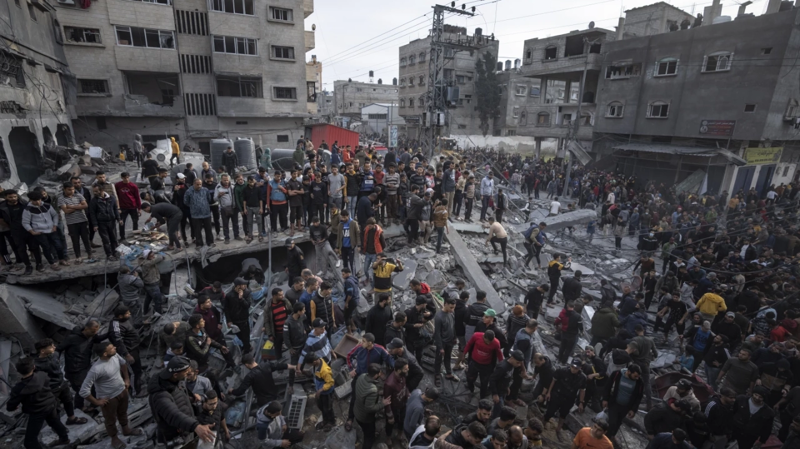

The ministry said at least 40,005 people have been killed in the war, including 40 in the previous 24 hours. It said another 92,401 people have been wounded in the conflict that broke out on October 7 when Hamas operatives attacked Israel.
The health ministry in Hamas-run Gaza said on Thursday that the death count has crossed 40,000 in the more than 10-month war between Israel and Palestinian operatives.
Listen to the latest songs, only on JioSaavn.com
The ministry said at least 40,005 people have been killed in the war, including 40 in the previous 24 hours. It said another 92,401 people have been wounded in the conflict that broke out on October 7 when Hamas operatives attacked Israel.
That figure does not distinguish between civilians and combatants. However, Gaza’s Hamas-run Health Ministry has said there were about 6,000 women and 11,000 children among the dead.
The Israel Defense Forces said they have killed more than 15,000 combatants throughout the course of the war.
The true death toll in Gaza, after more than 10 months of war, could be significantly higher than the Health Ministry’s figure because officials in Gaza estimate that an additional 10,000 people in Gaza are unaccounted for because of the war.
Casey Harrity from Wyoming, who is working in Gaza for the non-governmental organization Save the Children International, agrees that the true death toll from the war is "far higher."